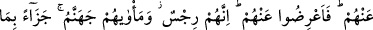

TEBÜK GAZVESİ’NE
KATILMAYANLAR
90. Özür bahane eden bedevî Araplar, kendilerine izin verilmesi için geldiler.
Allah’a ve Rasûlü’ne yalan söyleyenler de oturdular. Onlardan inkâr edenlere acı
bir azâb erişecektir.
91. Zayıflara, hastalara, harcayacak bir şey bulamayanlara, Allah’a ve Rasûlü’ne
karşı samimi oldukları takdirde (sefere katılmamalarından ötürü) bir günah yoktur.
İyilik edenlerin aleyhine bir yol yoktur. Allah, bağışlayan esirgeyendir.
92. Kendilerine binek sağlaman için sana geldikleri zaman sen: “Sizi bindirecek
bir şey bulamıyorum.” deyince, (ihtiyaç duydukları şeyleri senin yanında
bulamadıklarından onları satın almak için) harcayacak bir şey bulamadıklarından
dolayı üzüntüden gözlerinden yaş aka aka dönen kimselerin aleyhine de (yol
yoktur. Onlar da kınanmazlar.).
93. Ancak şu kimselerin (kınanmasına) yol vardır ki, onlar zengin oldukları halde